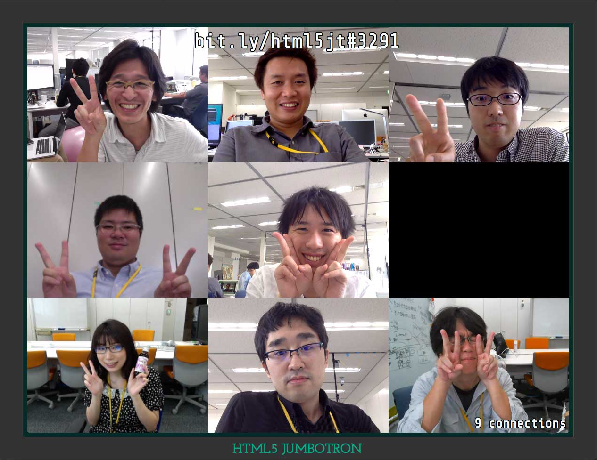
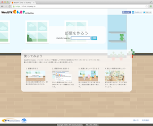
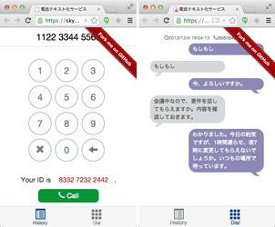
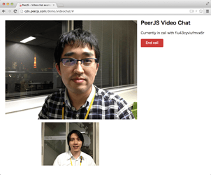
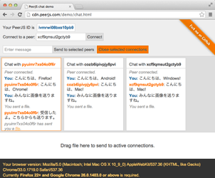

HTML5 JUMBOTRON
This app allows the audience to participate on the big screen and liven up events.

WebRTC Chat on SkyWay
A free video and voice chat service built using SkyWay provided by NTT Communications. It requires no installation and no registration.

Caption phone
A voice chat service that uses speech recognition to automatically display what you are saying.

Simple Video Chat
Connect to your peer by inputting their ID. A simple video chat program.
(Provided by PeerJS)

Text Chat with File Transfer
Connect to your peer by inputting their ID. You can send messages or drag and drop to send a file.
(Provided by PeerJS)
